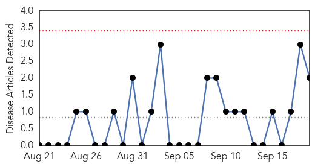
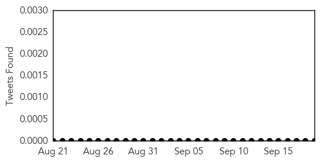
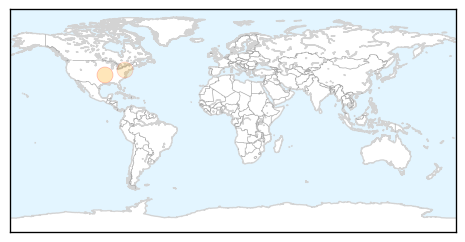
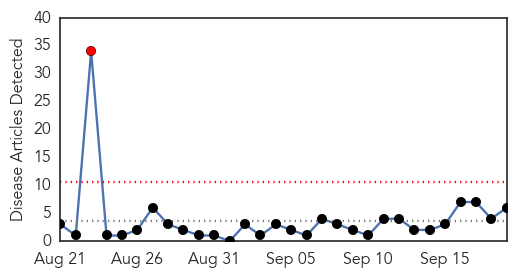
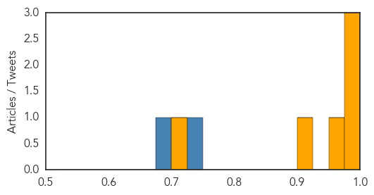

Mold/Fungal
30-Day Web Trend
0 alerts, 0 warnings

30-Day Twitter Trend
0 alerts, 0 warnings

Article Locations
Article Confidences

Top Articles:
Top Tweets:
-
No tweets found for Sep 19, 2015
Cholera
30-Day Web Trend
1 alerts, 0 warnings

30-Day Twitter Trend
0 alerts, 0 warnings

Article Locations

Article Confidences
Top Articles:
- 0.997
- Kenya has an effective cholera vaccine
- 0.992
- 4 killed in suspected Iraq cholera outbreak
- 0.989
- Four killed in suspected Iraq cholera outbreak - Iraq
- 0.959
- Cholera kills 5 women, infects more in Abu Ghraib
- 0.916
- Sunyani records 15 cholera cases this year
- 0.706
- Iraq tries to contain cholera outbreak west of Baghdad
Top Tweets:
- 0.741
- RT: .@WHO: >47% of world cholera cases (2013) were in Americas--all in Haiti 58509+2322 nearby. All caused by. http:/…
- 0.681
- RT: 47% of worldwide cholera cases (2013) are from's 2010 contamination of Haiti rivers. Scientific evidence confirms ex…